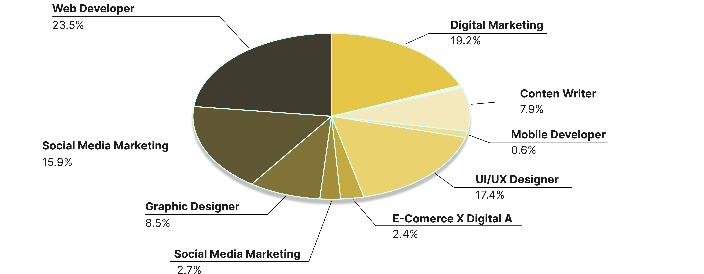

    <main>
        <section id="hero">
            <!--selamat datang section-->
            <article>
                <section id="opening-section">
                    <div id="opening-section-content">
                        <h1>Komunitas LuarSekolah</h1>
                        <p>
                            Tempat bagi SobatLS untuk mendalami Luarsekolah, berintersksi, dan berdiskusi. Mari bersama memberdaya dan menghunbungkan antusias pendidikan dalam pertukaran pengetahuan, dukunagan, dan kolaborasi,Lebih dari 1,000,000 anggota telah bergabung untuk berbagi ilmu, berdiskusi, dan menciptakan perubahan positif. 
                            <br>#Sampaijadibisa
                        </p>
                    </div>
                    <a href="#">
                        <button>Gabung Sekarang</button>
                    </a>
                </section>
                <section id="video-komunitas">
                    <h2>
                        Intip sekilas komunitas kami?
                    </h2>
                    <video controls="controls">
                        <source src="https://videos.pexels.com/video-files/29454566/12679468_2560_1440_60fps.mp4" type="video/mp4">
                        video
                    </video>
                </section>
            </article>

            <!--mari berdiskusi section-->
            <article>
                <div id="statistik-section-header">
                    <h2>
                        Mari Intip Alumni Luarsekolah
                    </h2>
                    <p>
                        Saat ini, ada <b style="color: black;">500+</b> diskusi aktif dan <b style="color: black;">1,200</b> komentar terbaru. Bergabunglah dalam diskusi yang menarik perhatian Anda!
                    </p>
                </div>
                
            </article>

        </section>